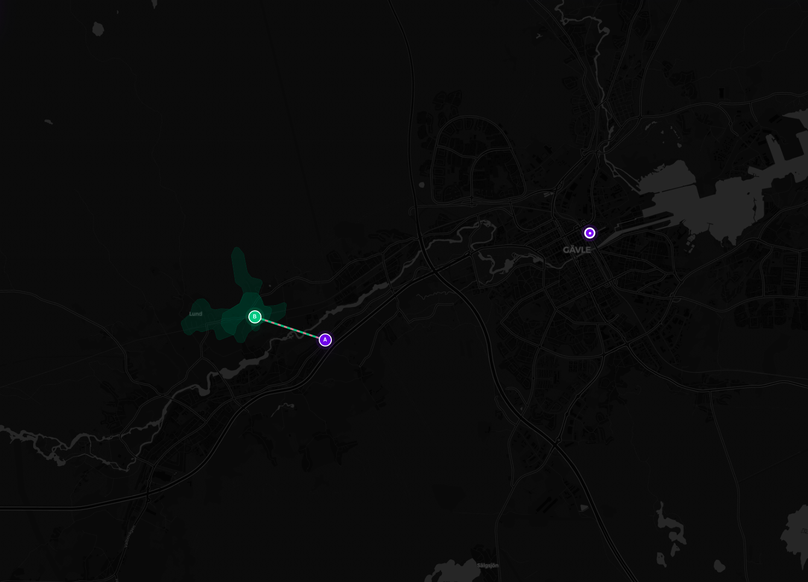
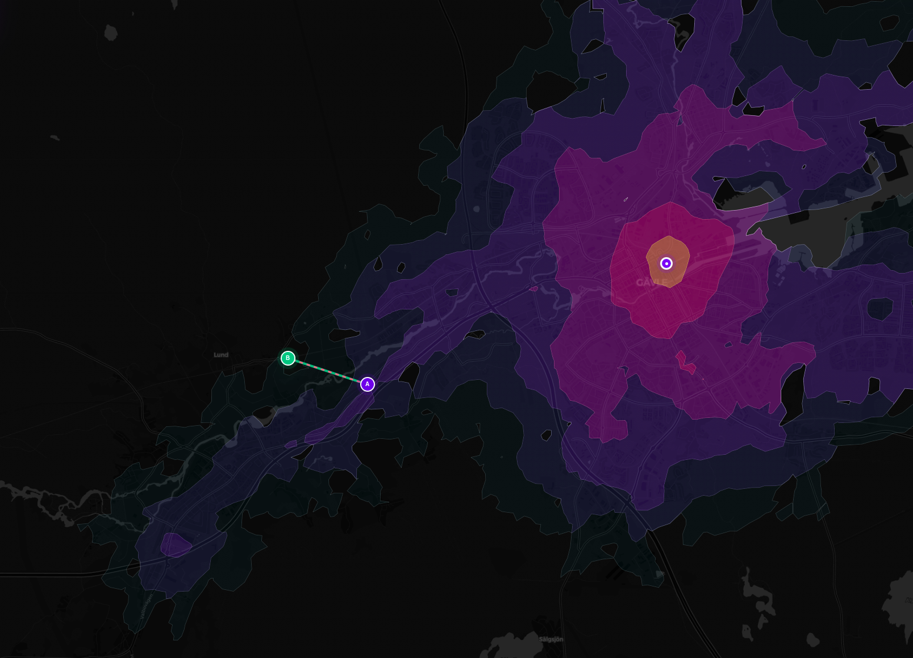
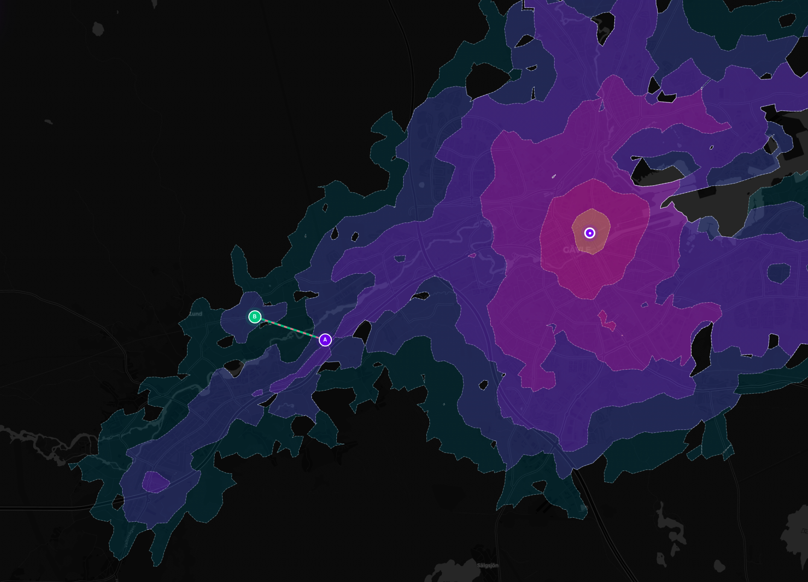
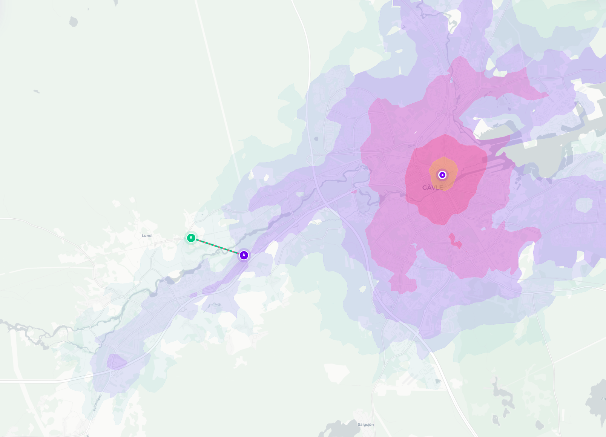
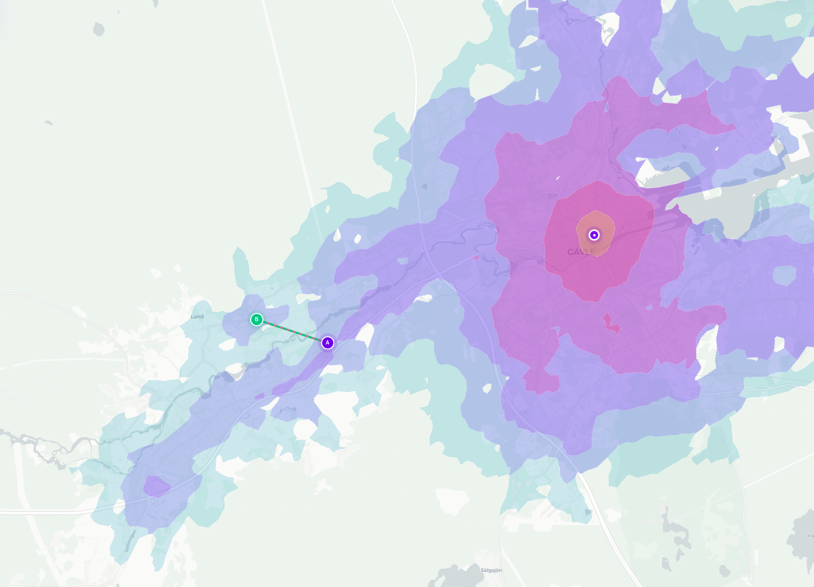
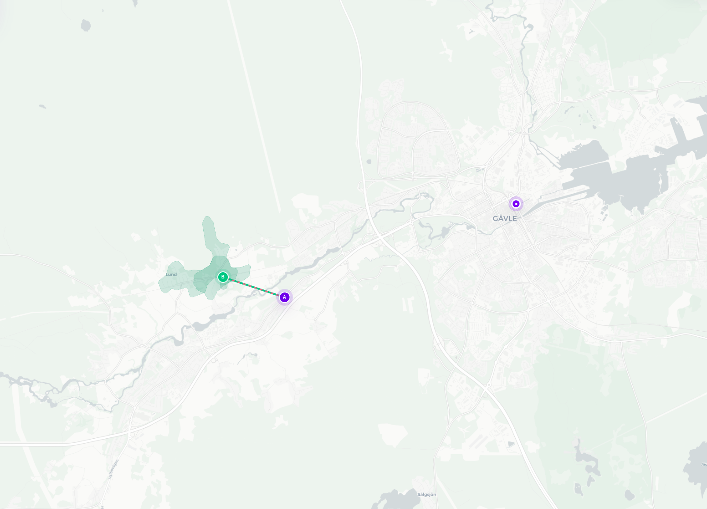

Gävle
Kollektivtrafik & gång
30 minuter
Förstärkningsanalys
Före
Efter
Tillkommen tillgänglighet
☀️
Ljust läge






Befintlig nåbarhet (Före)
Tillkommen nåbarhet (+2 389 vid 30 min)
Ny förbindelse A (Gävle) ↔ B (Lund, Gävle)
Analysunderlag & metod
Gävle förstärkningsscenario
Startpunkt
A (Gävle V), B (Lund, Gävle)
Färdsätt
Kollektivtrafik och gång
Tidsintervall
30 minuter
Förändring
Ny förbindelse mellan punkt A och B
Befolkningskälla
Statistiska centralbyrån (SCB DeSO)